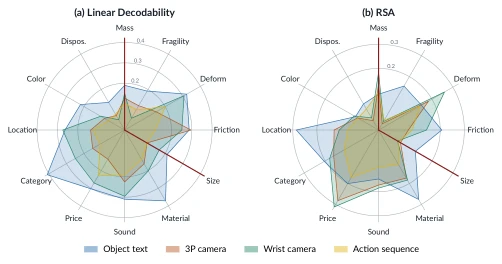
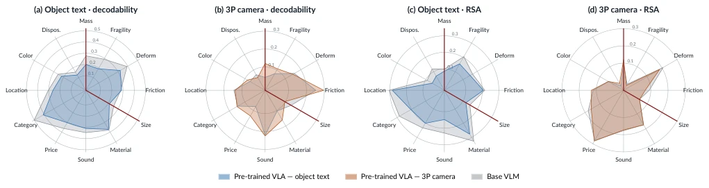
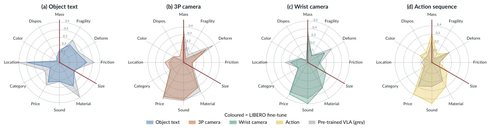

Fig. 1. Signalling a heavier object changes how VLAs act. Top: SmolVLA, moka pot; the instruction names the pot full of coffee and its mass is increased, and the pot ends tilted on the stove. Bottom: π0.5, white mug; the instruction is unchanged, the mug is rendered full of coffee and its mass is increased, and the mug drops from the gripper. Left: original task, where both succeed.
Fig. 2. The two VLA families we study, and how we extract their latent representation. Top: an autoregressive policy (OpenVLA, π0-FAST) runs one transformer over a multimodal prefix and generates discrete action tokens one at a time. Bottom: a flow-matching policy (π0, π0.5, VLA- JEPA, SmolVLA, GR00T-N1.7) attends the VLM prefix, layer by layer, from a separate action expert that denoises a noisy action chunk over K flow steps. In both, we record the activations at every layer and mean-pool a modality’s token span into one embedding: per-view vision, the object head- noun text tokens, the optional state token, and the action tokens (generated tokens, or the expert’s tokens at the last flow step). The input modalities and their ordering vary across models. For clarity we omit VLA-JEPA’s wor
Fig. 6. Task success rate under mass-relevant cues. Success rate averaged over tasks (13 with the language-based cue, 10 with the vision-based cue; 20 episodes per task and setup), with error bars showing the standard error across tasks. (a) The four language-based setups are listed in Table I. (b) The two vision-based setups are illustrated in the bottom row of Fig. 1. Setups are detailed in Sec. VI-A and results discussed in Sec. VI-B.
其他图片Other Figures

Fig. 3. Physical properties by modality stream in pre-trained VLAs. (a) Decodability: the gap between probe accuracy and chance (1/K for categorical properties, 0.5 for ordinal ones; Sec. V-A). (b) Representation geometry: RSA (Sec. V-B). Both metrics are defined in Sec. IV. Each polygon is one modality stream and each axis is one property. The dark-red boundary axes bracket the physical properties (mass to size). Values are averaged over the seven pre-trained VLAs (six for the wrist camera) and over OXE, DROID.

Fig. 4. Base VLM vs. pre-trained VLA, by modality stream. Each radar overlays the base VLM (grey) and its pre-trained VLA (blue for the object-text stream, orange for the third-person camera stream) over the twelve properties, with the physical properties bracketed by the dark-red axes. (a, b) Decodability, i.e. probe accuracy minus chance; (c, d) Representation geometry, measured by RSA. Both are averaged over all VLA–VLM pairs and over OXE, DROID. See Sec. V-C for the discussion.

Fig. 5. RSA: LIBERO fine-tuning versus pre-training, one radar per modality stream. Each panel overlays the pre-trained VLA (grey) and its LIBERO fine-tune (in the stream’s colour) over the twelve properties (clockwise, Sec. III order; physical properties bracketed by the dark-red axes), averaged over the seven families with a LIBERO checkpoint. LIBERO mass is simulator mass; categorical RSA is defined on LIBERO, but its labels are nearly single-class (location: 14 of 15 objects kitchen). Discussed in Sec. V-D.